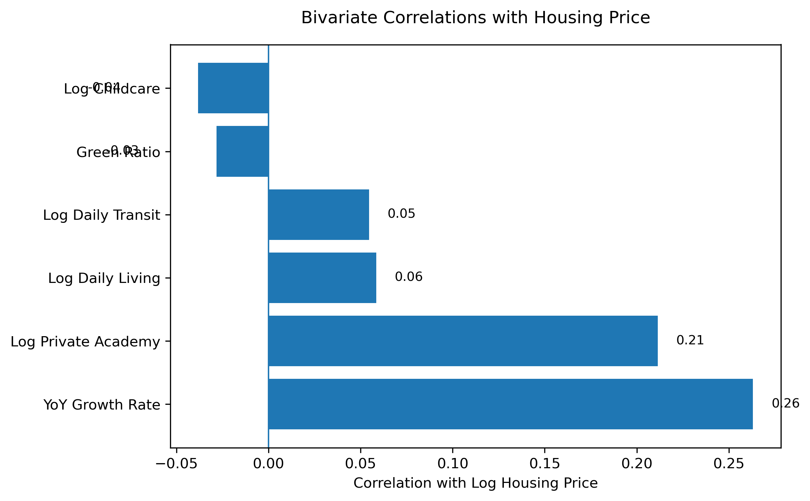
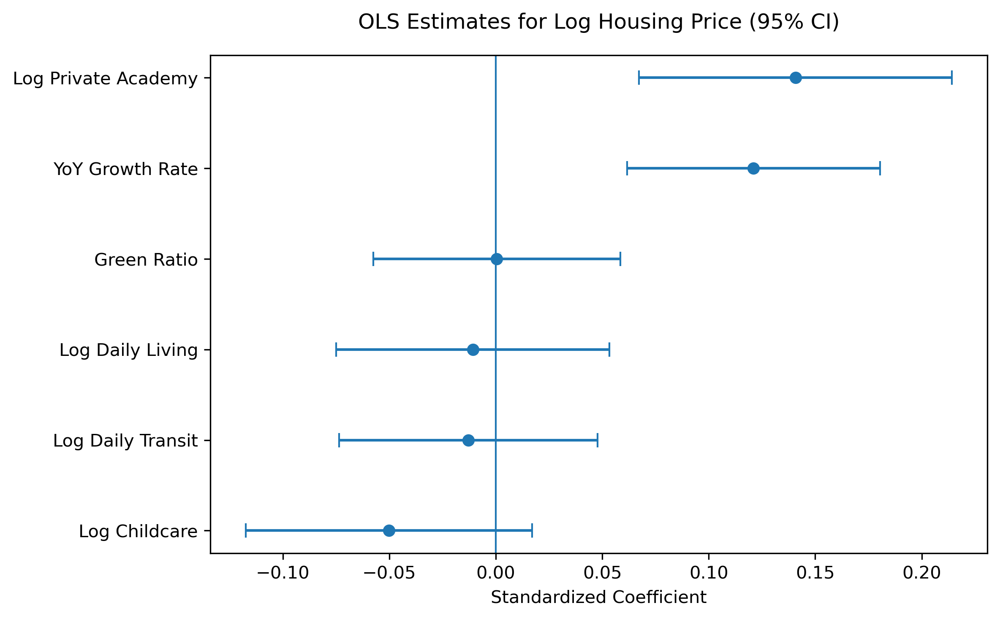
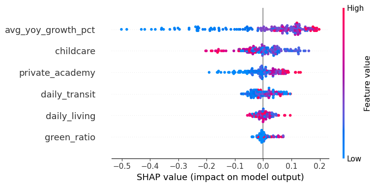

1. Correlations Through Heatmaps
This section visualizes how housing prices are related to key neighborhood amenities across Seoul. Each map presents the spatial distribution of variables at the dong level, the smallest administrative unit in the city. This fine-grained geographic scale allows us to capture localized variations in housing markets and neighborhood conditions that would be hidden at higher levels of aggregation. By comparing patterns across dongs, users can better understand how differences in accessibility, education, safety, and green space contribute to spatial inequality within Seoul.

Source: Korea Real Estate Transaction System (MOLIT) | Processed monthly raw data
Last updated: December 2025

Source: Seoul Open Data Portal | Daily living population aggregated to monthly average
Last updated: February 2026

Source: Seoul Open Data Portal | Daily transit data aggregated to monthly average
Last updated: February 2026

Source: Seoul Open Data Portal | Private academy dataset (CSV)
Last updated: February 2026

Source: Seoul Open Data Portal | Park data (CSV)
Last updated: February 2026

Source: Seoul Open Data Portal | Childcare facilities data (CSV)
Last updated: February 2026
2. Statistical Relationship
To examine how local amenities are associated with housing prices, we combine correlation analysis and regression estimates. Correlation highlights simple pairwise relationships, while regression helps identify which variables remain meaningful after accounting for overlapping neighborhood factors.
Correlation with Housing Price

This chart shows the simple correlation between housing prices and each neighborhood variable. Year-over-year growth has the strongest positive relationship with housing prices, followed by private academy density. In contrast, transit and daily living indicators show relatively weak associations.
Regression Estimates (Controlled Effects)

This figure presents standardized regression coefficients with 95% confidence intervals. After controlling for multiple neighborhood factors simultaneously, growth dynamics and education-related amenities remain the most meaningful predictors, while other variables lose significance due to overlapping effects.
Interpretation
- Housing prices are more strongly associated with growth dynamics than with most static neighborhood amenities.
- Education-related amenities show a moderate positive relationship with housing prices, highlighting the role of local human capital environments.
- Many amenity variables move together, suggesting they reflect a broader “neighborhood quality” rather than independent effects.
- Once these overlapping factors are considered simultaneously, only a few variables remain statistically meaningful.
- Overall, housing prices are shaped by both growth expectations and bundled neighborhood characteristics, not a single factor alone.
3. Machine Learning Interpretation
To complement the statistical analysis, we apply a machine learning model to examine how neighborhood characteristics jointly relate to housing prices. Instead of focusing only on average linear effects, this approach helps capture non-linear patterns and differences in variable importance across dongs.
SHAP-Based Model Interpretation
We use SHAP (SHapley Additive exPlanations) values to interpret the machine learning model. SHAP shows how much each feature contributes to the predicted housing price for each neighborhood.
This helps move beyond simple correlations by identifying which variables matter most in the model and whether higher values of each feature tend to push predicted prices upward or downward.
SHAP Summary Plot

Each point represents one neighborhood. The horizontal position shows whether a variable increases or decreases the predicted housing price, while color indicates whether the feature value is high or low.
Model Interpretation
The SHAP results suggest that year-over-year growth is the most influential variable in the model. Higher growth values are consistently associated with higher predicted housing prices, indicating that market momentum plays a central role in Seoul’s housing market.
Private academy and childcare availability also contribute positively to predicted prices, suggesting that education-related amenities are important components of neighborhood desirability. By contrast, daily transit and daily living infrastructure show more moderate and less consistent effects, while green ratio contributes very little overall.
Taken together, the machine learning model indicates that housing prices are shaped less by any single static amenity and more by a combination of growth expectations and clustered neighborhood quality factors.